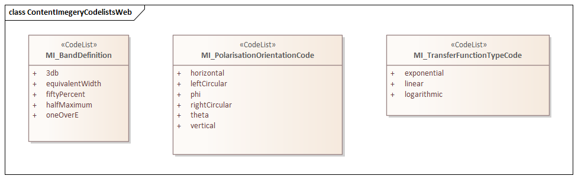
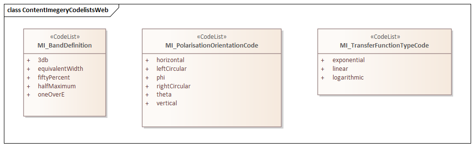

MRC 2.2 is an XML Schema implementation derived from ISO ISO 19115-2:2019 (Ed2), Geographic Information - Metadata - Part 2: Extensions for acquisition and processing, Clause 6.3.5. The MRC 2.2 schema is an extension of MRC 1.3 as defined in ISO 19115-1, Geographic Information - Metadata - Part 1: Fundametals. It includes additional elements for describing resource structure and content mostly relating to imagery. The XML schema was encoded using the rules described in ISO/TS 19139:2007.
The namespace URI for mrc 1.3 is https://schemas.isotc211.org/19115/-1/mrc/1.3 inherited from ISO 19115-1.
https://schemas.isotc211.org/19115/-1/mrc/1.3.0/mrc.xsd is the XML Schema document to be referenced by XML documents containing XML elements in the mrc 1.3 namespace or by XML Schema documents importing the mrc 1.3 namespace. The schema https://schemas.isotc211.org/19115/-1/mrc/1.3.0/mrc.xsd forms the basis the ISO 19115 Metadata Resource Content definitions from both ISO 19115-1 and ISO 19115-2. This XML schema includes (indirectly) all the implemented concepts of the mrc namespace, but it does not contain the declaration of any types.
https://schemas.isotc211.org/19115/-1/mrc/1.3.0/content.xsd implements the UML conceptual schema defined in ISO 19115-1, Geographic Information - Metadata - Part 1: Fundamentals AMENDMENT 1, Clause 6.5.9. Details about https://schemas.isotc211.org/19115/-1/mrc/1.3.0/content.xsd can be accessed from https://schemas.isotc211.org/19115/-1/mrc/1.3.0.
contentInformationImagery.xsd implements the UML conceptual schema defined in ISO 19115-2, Geographic Information - - Metadata - Part 2: Extensions for acquisition and processing, Clause 6.3.5. contentInformationImagery.xsd MI_Band inherits attribues from ISO 19115-1:Content Information:MD_Band, MI_ImageDescription inherits attribues from ISO 19115-1:Content Information:MD_ImageDescription, and MI_CoverageDescription inherits attribues from ISO 19115-1:Content Information:MD_CoverageDescription. It was created using the encoding rules defined in ISO 19118, ISO 19139.
https://schemas.isotc211.org/19115/-2/mrc/2.2.0/contentInformationImagery.xsd contains the folowing classes:| Name | Standard Prefix | Namespace Location | Schema Location |
|---|---|---|---|
| Geographic Common Objects in its own right and also by inheritance |
gco | https://schemas.isotc211.org/19103/-/gco/1.2 | ../../../../191103/-/gco/1.2.0/gco.xsd |
| Feature Catalog Common by inheritance |
fcc | https://schemas.isotc211.org/19110/-/fcc/2.2 | ../../../../19110/-/fcc/2.2.0/fcc.xsd |
| Geographic Markup Wrappers by inheritance |
gmw | https://schemas.isotc211.org/19136/-/gmw/1.1 | ../../../../19136/-/gmw/1.1.0/gmw.xsd |
| Geospatial MetaLanguage by inheritance |
gml | http://schemas.opengis.net/gml/3.2 | http://schemas.opengis.net/gml/3.2.1/gml.xsd |
| Language localization by inheritance |
lan | https://schemas.isotc211.org/19115/-1/lan/1.3 | ../../../../19115/-1/lan/1.3.0/lan.xsd |
| Metadata for Acquisition Metadata for Acquisition by inheritance |
mac | https://schemas.isotc211.org/19115/-2/mac/2.2 | ../../../../19115/-2/mac/2.2/mac.xsd |
| Metadata Common Classes by inheritance |
mcc | https://schemas.isotc211.org/19115/-1/mcc/1.3 | ../../../../19115/-1/mcc/1.3.0/mcc.xsd |
Written by hand. Version: 2021-02-17